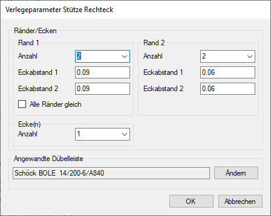

 |
Ränder/Ecken
Rand 1 / Rand 2
Bei einem Drehwinkel von 0° entspricht Rand 1 dem oberen und unteren Rand der Stütze. Rand 2 dem linken und rechten Rand.
Anzahl
Geben Sie an, wie viele Dübelleisten an den Rändern verlegt werden sollen. Das Ergebnis ist sofort sichtbar.
Die entsprechenden Dübelleisten (Rand 1 oder Rand 2) werden in der Zeichenfläche hervorgehoben.
Eckabstand 1
Geben Sie den Abstand der Dübelleiste vom oberen rechten bzw. unteren linken Eckpunkt an.
Die Bauteilecken, auf die sich die Abstandseingaben beziehen, werden jeweils durch ein markiert.
Eckabstand 2
Geben Sie den Abstand der Dübelleiste zu dem markierten () Eckpunkt an.
Alle Ränder gleich
Übernimmt die Angaben aus Rand 1 auch für Rand 2.
Ecke Anzahl
Geben Sie die Anzahl der Dübelleisten an den Ecken an.
Angewandte Dübelleiste
Zeigt den Dübelleistentyp an.
Ändern
Sie können die Dübelleistendefinition ändern. Klicken Sie auf diese Schaltfläche, um den Dialog Eigenschaften Dübelleisten zu öffnen. Geben Sie im Dialog die neuen Parameter an und bestätigen Sie mit Ok. Nach dem Bestätigen gelangen Sie wieder zum Dialog Verlegeparameter Stütze Rechteck. Der gewählte Dübelleistentyp wird im Bereich Angewandte Dübelleiste angezeigt.
» Eigenschaften Dübelleisten (Referenz)
Ok
Die Dübelleisten werden verlegt und der Dialog geschlossen. Sie können sofort ein weiteres Bauteil bewehren.
Abbrechen
Bricht die Bearbeitung ab und Sie können einen neuen zweiten Eckpunkt des Bauteils wählen.
Zugehörige Aufgaben: